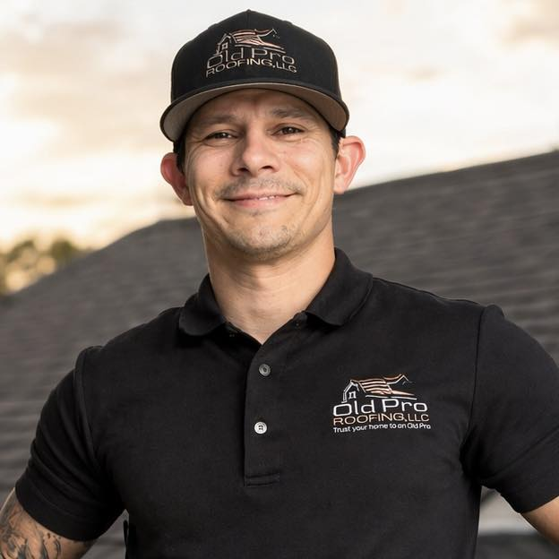
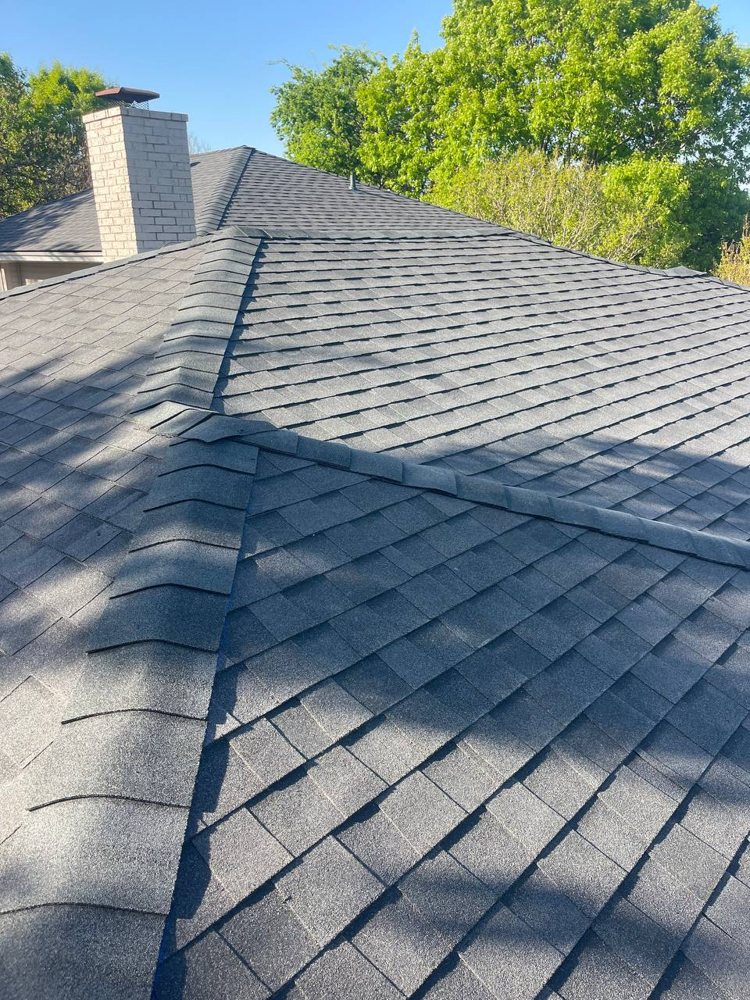
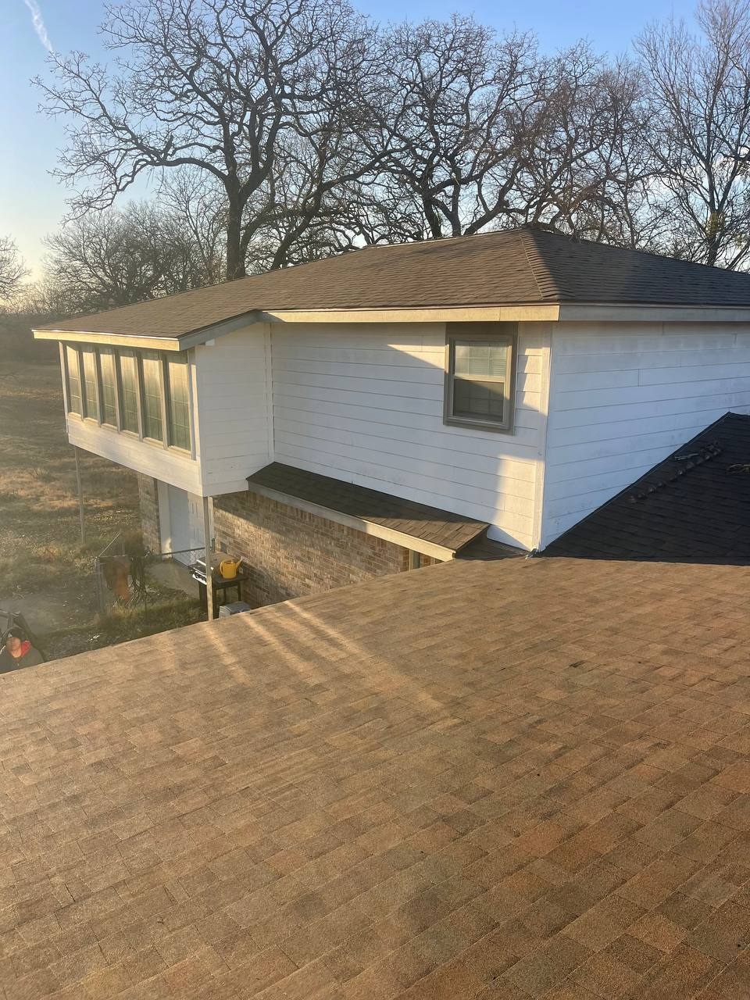
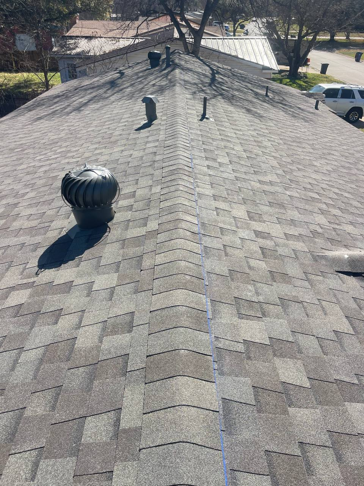
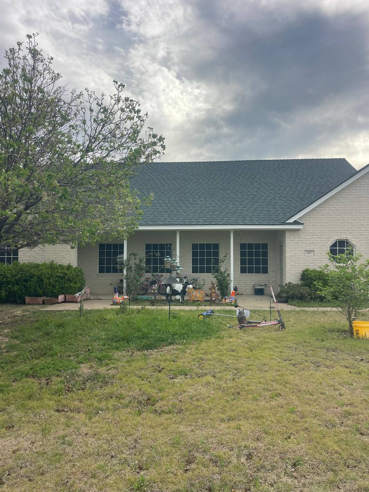

Work one-on-one with Josh Holland, an Old Pro Specialist — honest answers, no pressure, and a roof that's built to last.
Call NowI work with homeonwers across Burleson and nearby areas to handle roof inspections, repairs, and full replacements. From Crowley to Cleburne, and throughout the Johnson and Tarrant County area. I'll make sure you know exactly what's going on and what your options are - simple, honest, and done right.
★★★★★
Josh treats you like a person, not just another job. You can tell he actually cares about doing things the right way.
- Mark R.
★★★★★
I've dealt with a few roofers before and this was by far the smoothest experience. No pressure, no runaround, he handled it the right way.
– Lisa T.
★★★★★
Josh was easy to deal with from the start. Showed up when he said he would, explained what was going on, and handled everything without making it compicated.
– David M.
★★★★★
I thought I had storm damage but wasn't sure. Josh came out, took his time, and walked me through everything. Didn't try to sell me anything - just gave me a straight answer. That alone, goes a long way!
– Chris K.




Burleson • Crowley • Cleburne • Joshua • Alvarado • Godley • Benbrook • Fort Worth • Arlington • Mansfield • Waxahachie • Midlothian • Weatherford • Aledo • Azle
Phone: (682) 272-0473
Email: j.holland@oldproroofing.com
Address: 140 W Eldred St, Burleson TX 76028